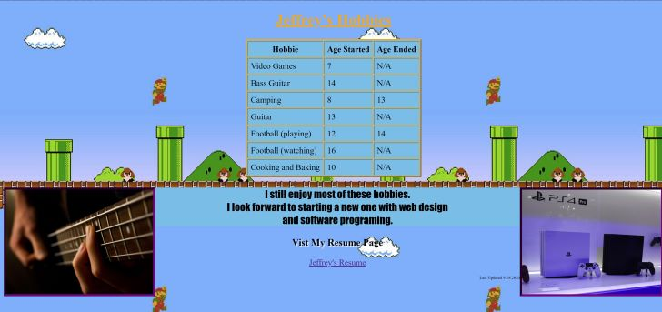
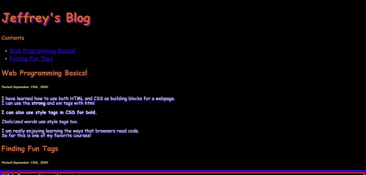
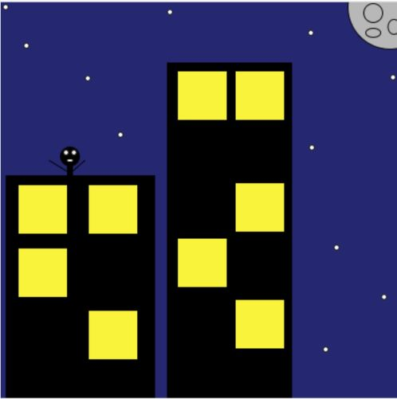
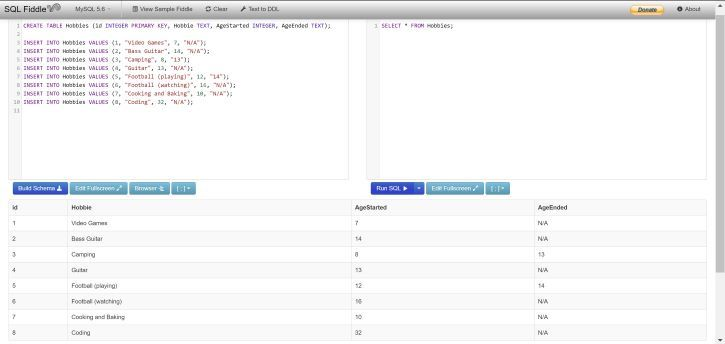

HTMLIn our HTML section I learned many of the basic skills needed for programing web pages. My Favorite part of HTML was creating code in notepad++ and sublime text then, The hardest part of HTML was learning how to organize my code One example of what I created with HTML is a my hobbies page. |
 |
CSSIn our CSS section I learned how to add style to my web pages. My favorite part of CSS was researching new ways to style my page. With most The hardest part of CSS was working with alignment and positioning. One example of what I created with CSS was my blog project. I kept updating |
 |
JavascriptIn our Javascript lessons I learned about functions and "drawing" with code. My favorite part of Javascript was animation and creating my own functions. The hardest part of learning Javascript was also animation. I struggled with One example of what I created with Javascript is my shooting star project. I felt |
 |
SQLIn SQL I learned the Standard Query Language. This is an extremely important language My favorite part of SQL was going outside of Kahn Academy for our projects. Being able to The hardest part of SQL was remembering what to capitalize and what not to. This caused me One example of what I created with SQL was a movie database with my favorite movies. |
 |